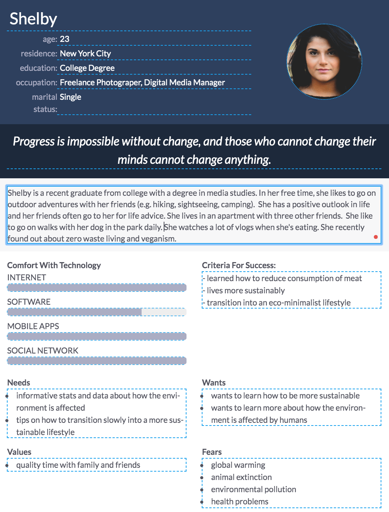

I decided to build a user persona for my interactive project to get a better understanding of what type of content I could put on my website. I wanted my user persona to basically be a young millenial who is still unaware of the impacts of the meat industry and wants to learn how to live more sustainably. As I thought more about my user persona, it helped me realize that my interactive project could include a brief story about how the meat industry is destroying the environment as well as how our health could be affected. Then as the user scrolls to the bottom, there will be solutions on how to live more sustainably. There could be differenet section that include tips for transitioning into a vegan diet, tips for a sustainable kitchen/bathroom life, etc. Since the user persona is new to learning about how to be eco-friendly, the interface will be simple and clean. Important key stats and data will be large and bold.